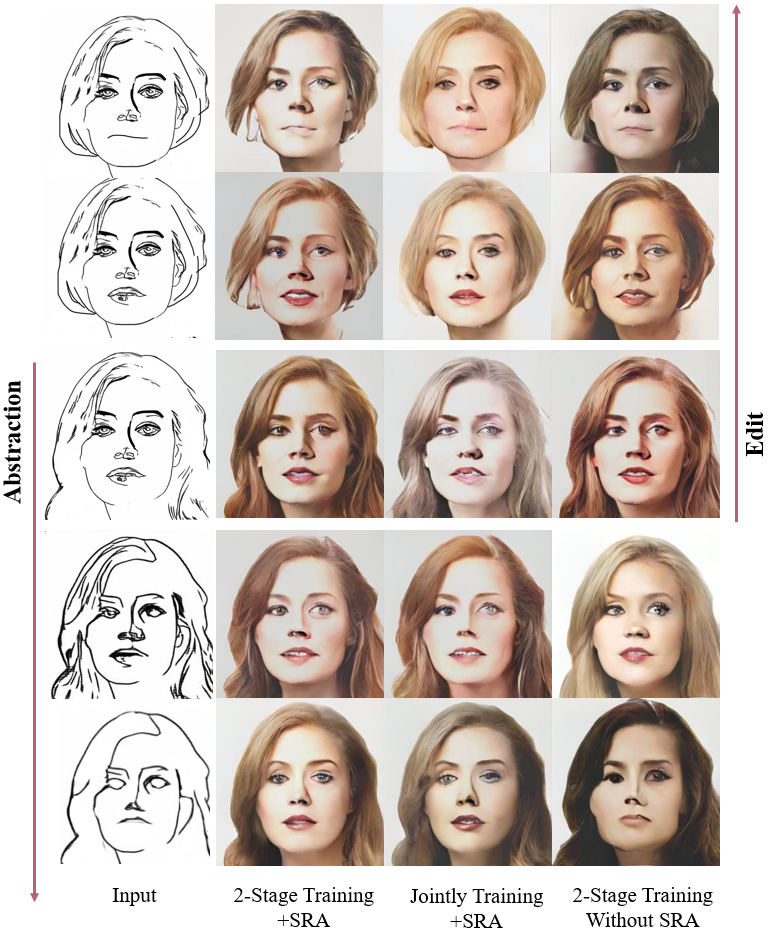

Distribution Mapping
The different feature distribution mapping between jointly trained conditional embedding (dashed line) and the separately trained conditional embedding (solid line), from the sketch (a) to the image (b) domain.
Synthesizing face images from monochrome sketches is one of the most fundamental tasks in the field of image-to-image translation. However, it is still challenging to (1)~make models learn the high-dimensional face features such as geometry and color, and (2)~take into account the characteristics of input sketches. Existing methods often use sketches as indirect inputs (or as auxiliary inputs) to guide the models, resulting in the loss of sketch features or the alteration of geometry information. In this paper, we introduce a Sketch-Guided Latent Diffusion Model (SGLDM), a LDM-based network architect trained on the paired sketch-face dataset. We apply a Multi-Auto-Encoder (AE) to encode the different input sketches from different regions of a face from pixel space to a feature map in latent space, which enables us to reduce the dimension of the sketch input while preserving the geometry-related information of local face details. We build a sketch-face paired dataset based on the existing method that extracts the edge map from an image. We then introduce a Stochastic Region Abstraction (SRA), an approach to augment our dataset to improve the robustness of SGLDM to handle sketch input with arbitrary abstraction. The evaluation study shows that SGLDM can synthesize high-quality face images with different expressions, facial accessories, and hairstyles from various sketches with different abstraction levels.
The original image in Celeba-HQ and its extracted edge map (a), and the result of paired data after cleaning up the background (b). Sketch simplification results from 3 different resolutions faces (left-bottom). And the random seamed data samples (right-bottom).
We compared the synthetic faces of the 2-Stage trained model and the jointly trained model.
Examples of partial editing such as hairstyles, earings, and expressions.
We compared the synthetic faces of the proposed SGLDM with the state-of-the-art methods. From the results, we confirm that SGLDM can synthesizes noiseless faces maintaining maximum consistency with the input sketch, except for some facial details such as nasolabial folds.
@misc{https://doi.org/10.48550/arxiv.2302.06908,
doi = {10.48550/ARXIV.2302.06908},
url = {https://arxiv.org/abs/2302.06908},
title = {DiffFaceSketch: High-Fidelity Face Image Synthesis with Sketch-Guided Latent Diffusion Model},
year = {2023},
}